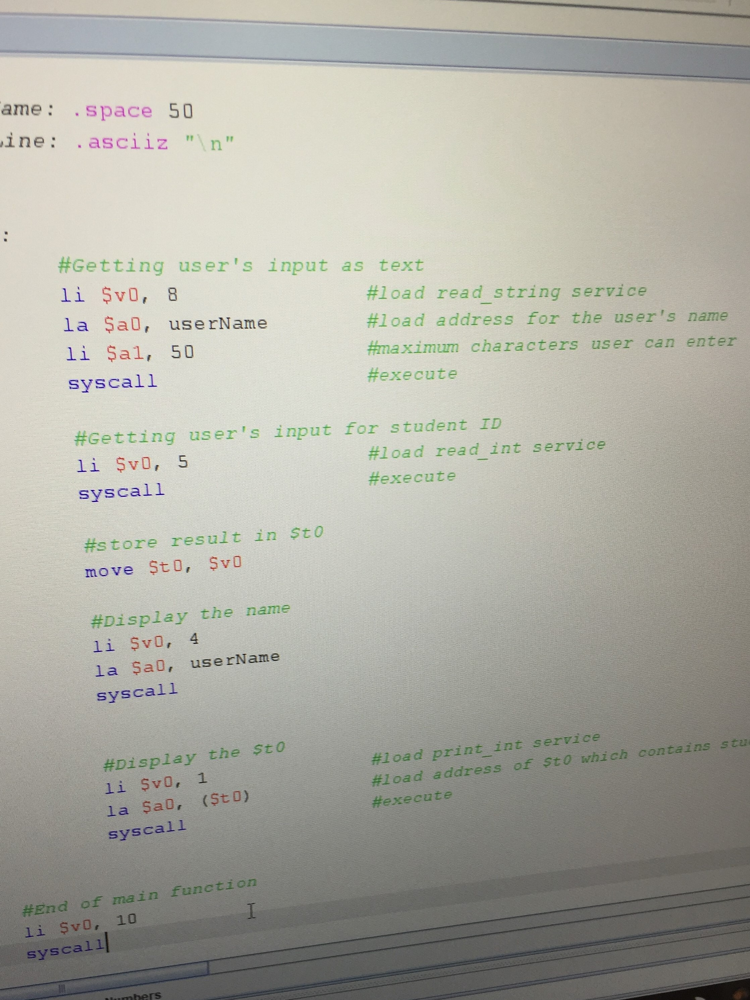
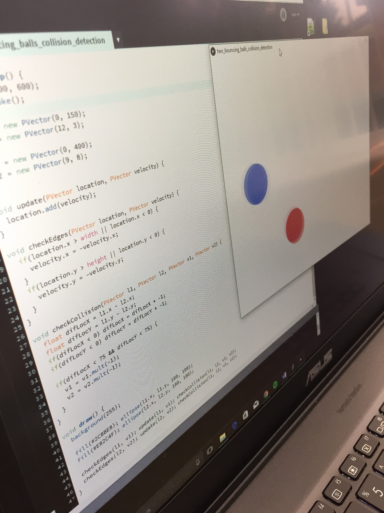

Computer Systems Fundamentals
This unit focuses on the concept behind computers and the mathematical theory. It goes into detail about computer components, digital logic, boolean algebra and discrete mathematics.

The relationship between high level programming languages and Assembler is also looked at in detail. Being able to program in Assembler is difficult but essential to appreciate how a computer operates, and why high level programming languages are so amazing.
Programming
Programming focuses on how to develop a persons problem solving skills. Using a step by step analysis of how to tackle a problem and implementing it via a programming language, such as Java. The approach of thinking algorithmically helps you to think how a computer would, which helps when trying to understand problems, and writing efficient code.
Understanding a high level programming language's syntax is vital in this unit. As you need the bricks and mortar to build the house right? That's exactly what programming is about, linking code together and building a solution, an efficient solution.